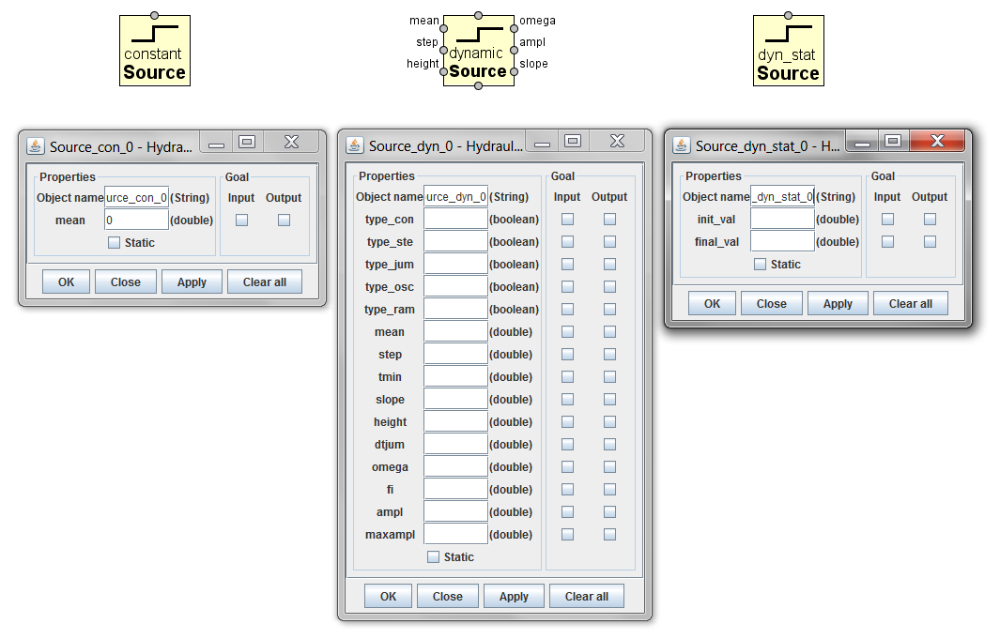

<div class="panel panel-default">
  <div class="panel-body">
 <h1>Source elements</h1>
<p>Source elements are used to provide schema of a hydraulic device with necessary inputs of required shapes and values. Outputs of source elements are as inputs for the scheme.</p>
<p><code>constant Source</code>  - generates constant value as an output. </p>
<p><code>dynamic Source</code>  - generates signal of required shape as an output. </p>
<p><code>dyn_stat_Source</code>  - generates different values (from init_val  to  final_val)  as outputs.</p>
<p><code>dyn_stat_Source</code>  is used for setting different values for those parameters of <code>dynamic Source</code>, which are defined as ports on the side edges of the <code>dynamic Source</code> image box. So it enables <code>dynamic Source</code> to generate signals of different values as input disturbances. The feature is used weather for computing 3D output data or for computing multiple 2D output graphs for different values of some parameters.</p>
<p>Number of different values is determined by parameter Y_steps  set in <code>Simulation process manager</code>.  If<code> dyn_stat_Source</code> is used for setting parameter for dynamic_Source, then the corresponding parameter must be devaluated directly in dynamic Source properties.</p>

 
 
<p>Properties for constant Source:</p>
<ul><li>	mean - constant value of the signal</li></ul>

<p>Properties for dynamic Source:</p>
<p>Different shape for generated disturbance signal can be chosen by setting
the variable type_ ... "true" (only one type_ ... must be set  "true")</p>

<p>The following parameters values must be set for generating signals of different shapes.</p>
	<ul><li><strong>For  type_ste = true:</strong>
	<ul>	mean - constant value of the signal
		step - height of the step
		tmin - for  t < tmin,  ramp function applies</ul></li>
<li>	<strong>For  type_jum = true:</strong>
		<ul><li>height  -  step height ( for t < tmin and (tmin+dtjum)&lt;t&lt;(2*tmin+dtjum)ramp function applies)   </li>
		<li>dtjum  -  duration of jump, s</li></ul></li>
<li><strong>	For  type_osc = true:</strong>
		<ul><li>omega   -  frequency,  rad/s   </li>
	<li>	fi      - phase lag, deg</li>
	<li>	 ampl    -  amplitude</li>
 		<li>maxampl - limiting amplitude (to cut off)</li></ul></li>
<li><strong>	For  type_ram = true:</strong>
		<ul><li>slope   - slope of the ramp function </li> 
	<li>	ram     - output value</li></ul></li>
<li>	<strong>For  type_con = true:</strong>
	<ul><li>	mean - constant value of the signal</li></ul></li></ul>

<p>Properties for dyn_stat_Source:</p>
<ul>	<li>init_val - initial value of the parameter</li>
<li>	final_val - initial value of the parameter</li></ul>


  </div>
  </div>